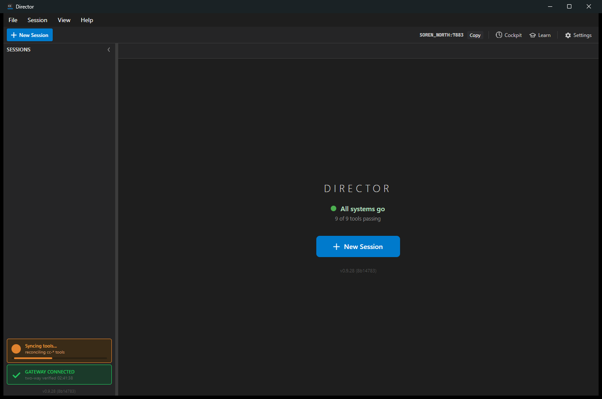
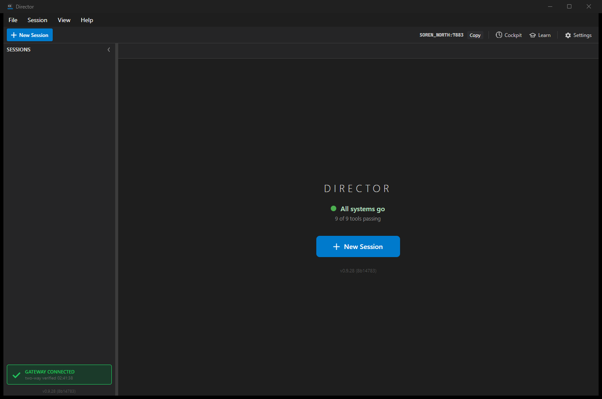
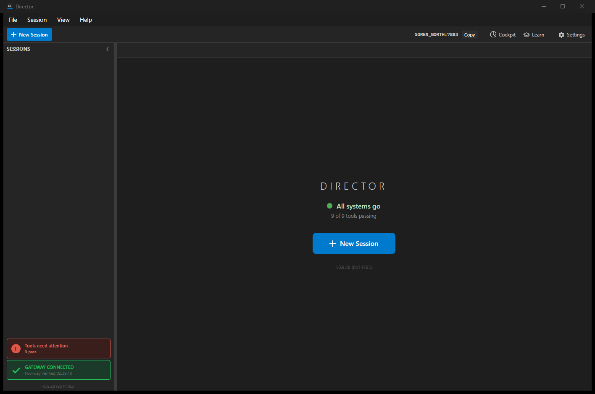

Title: [Tools] Active corner indicator: orange "Syncing tools..." state that auto-fixes drift
PR: #836 (branch issue-829-active-tools-indicator, commit 8b147834)
QA build: independently checked out, built (dotnet build cc-director.sln = 0 warnings / 0 errors),
and run on slot 17 test Director (per-session isolation).
Date: 2026-06-29
Drift was created against the real install by injecting a known orphaned legacy alias shim
(%LOCALAPPDATA%\cc-director\bin\cc-send.cmd, one of PythonToolsInstaller.LegacyAliasShimNames)
and toggling tools.autoUpdate.enabled. To hold the orange state stable for capture and to drive the
repeated-failure path, the injected shim was marked read-only so the reconcile's best-effort purge could
not remove it; clearing the read-only attribute then let the next backoff retry self-heal to green. The user's
config was backed up and restored afterward; all injected shims were removed.
| # | Criterion | Expected | Actual | Result |
|---|---|---|---|---|
| 1 | Syncing state distinct from green/warning/red; state machine Green->Orange->Green, Orange->Red on repeated failure | Distinct states with the documented transitions | ToolsSyncStateMachine + ToolsIndicatorState (InSync/Syncing/Warning/NeedsAttention); 12 state-machine unit tests pass; live log shows InSync->Syncing->InSync and Syncing->NeedsAttention | PASS |
| 2 | Drift + autoUpdate=true auto-triggers ReconcileAsync, debounced, shows orange | Orange shown, reconcile runs, one in flight | Log: "tools auto-reconcile starting (indicator Syncing)"; orange badge captured; one reconcile in flight, retries gated by cooldown | PASS |
| 3 | On success returns to green and hides; no user click needed | Badge hides, home all-green | After clearing read-only, retry purged the shim; log "reconcile resolved drift"; badge hidden, "All systems go / 9 of 9 tools passing" (green-resolved.png) | PASS |
| 4 | Red "Tools need attention" only after bounded failures with backoff | Red after 3 failed attempts; backoff between | Log: failures=1 (retry 5s), failures=2 (retry 10s), failures=3 -> NeedsAttention; red badge captured (red-needs-attention.png) | PASS |
| 5 | autoUpdate=false stays passive, no auto-reconcile | No reconcile; opt-out honored | With autoUpdate=false + injected orphaned shim: only "tool health" snapshot logged, NO indicator transition, NO reconcile; shim survived on disk (passive-autoupdate-off.png) | PASS |
| 6 | Orange styling per VisualStyle; responsive <100ms; spinner not frozen | Orange + progress, shown fast | Orange painted at StartToolsReconcile before the background reconcile (UpdateToolsIndicator first); orange badge shows "Syncing tools... / reconciling cc-* tools" with indeterminate spinner row | PASS |
| 7 | Logging records each transition (FileLog.Write) | Every transition logged | Every state change logged: "[MainWindow] tools indicator state: X -> Y ..." (see log excerpt) | PASS |
| 8 | Clean build; all tests pass; state-machine tests added | 0 errors; suites green | dotnet build cc-director.sln 0 warn/0 err; Core 2646 passed (6 env-skipped); setup-engine 217 passed; 12 state-machine + 4 HasDrift tests added | PASS |
| 9 | Proven in running app: orange during reconcile + green after | Both states captured live | orange-syncing.png and green-resolved.png captured from the running slot-17 Director | PASS |
Orange "Syncing tools..." (criteria 1, 2, 6, 9):

Bottom-left rail: orange dot, "Syncing tools...", "reconciling cc-* tools", indeterminate progress spinner.
Green resolved / badge hidden (criterion 3, 9):

Tools badge gone after self-heal; home "All systems go / 9 of 9 tools passing".
Red "Tools need attention" after 3 failed attempts (criterion 4):

Red badge with "!" glyph, clickable (opens Settings).
Passive with autoUpdate=false - no auto-reconcile (criterion 5):
Orphaned shim present but reconcile never ran; badge stays passive.
See qa-director-log-excerpt.txt in this directory.
Every screenshot read: home reads healthy ("All systems go / 9 of 9 tools passing"), gateway connected, no broken render, no adjacent breakage. Build clean (0 warnings). Full Core and setup-engine suites pass.